|  | |
| The Deccan offer a relaxing way to enjoy the trip. The Deccan is a daylight service to enable guests to view the beautiful country scenery enroute, with a choice of either Red Premium Service or Red Service. Both seat types feature comfortable reclining seats with armrests and tray tables. With up to 60 guests in Red Service per carriage and only 36 guests in Red Premium Service carriages, daylight train travel has never been so spacious. |